CH13-006 — images
【限界】頑張るほど心が荒れる｜壊れる前に引く線
ep
CH13
Script Viewer
書庫
snapshot
guide
台本
音声
サムネ
画像
← CH13-005
CH13-007 →
CH13-006
画像
updated_at: 2026-01-14T03:14:08.313083Z
run_id:
CH13-006_redo3_schnell_20260102_101917
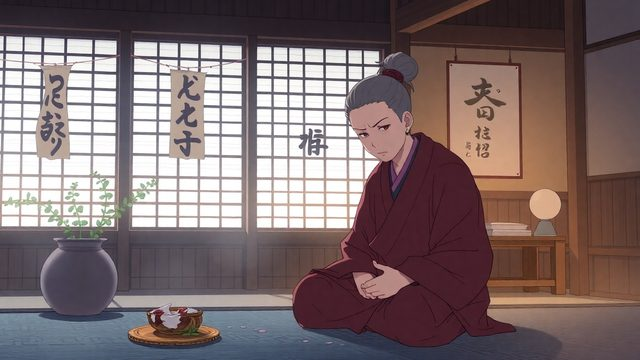
CH13-006
体からの限界のサイン／体の変化と代償
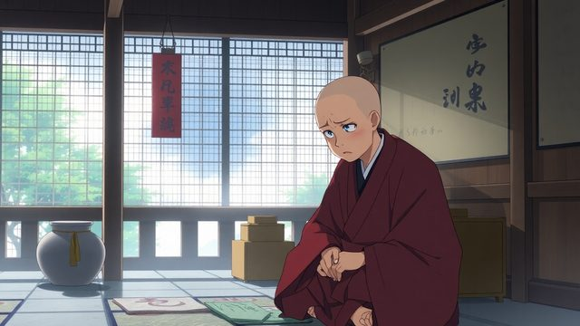
CH13-006
心の兆しと疲れ
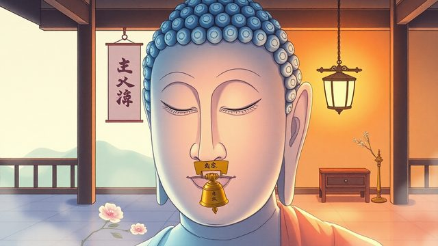
CH13-006
自分を責めずに気づく
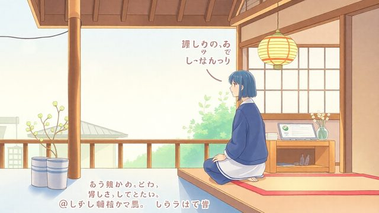
CH13-006
状態を認めて名前をつける
CH13-006
小さな調整で整える／頑張りの重さを分ける
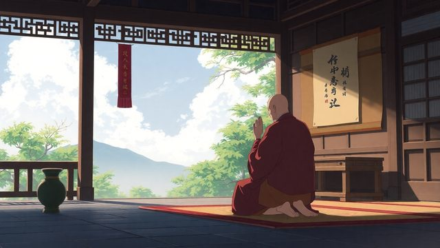
CH13-006
自分のための努力と期待への努力
CH13-006
期待に応える頑張りの例／相手の無意識と自分の後回し
CH13-006
境目の曖昧さと敏感さ
CH13-006
いら立ちの原因と領域の狭さ
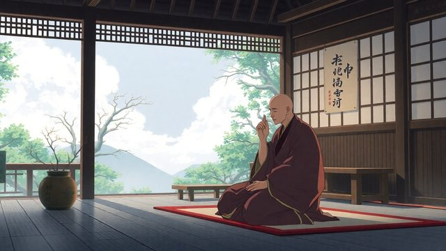
CH13-006
心の動きと反応の仕組み
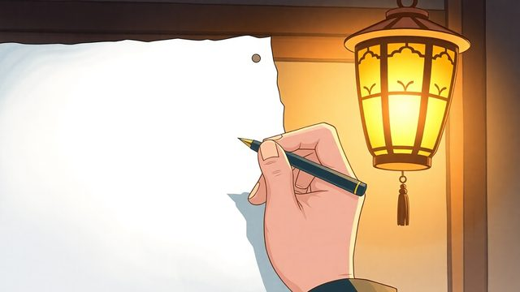
CH13-006
嫌味が頭から離れない夜
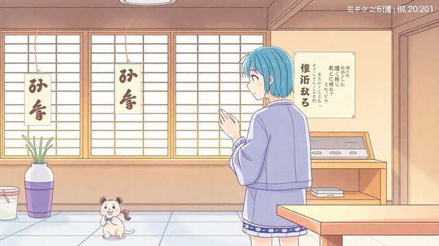
CH13-006
出来事と反応を分ける
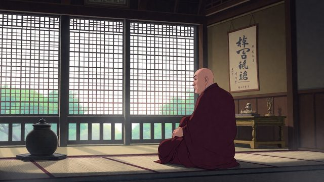
CH13-006
心の先回りと執着
CH13-006
握りしめと苦しみの増幅
CH13-006
連絡への身構えと手を緩める
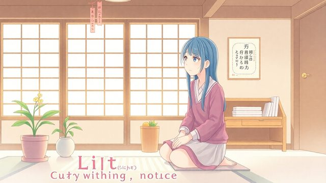
CH13-006
反応に気づき余白を作る
CH13-006
領域を分け線を作る
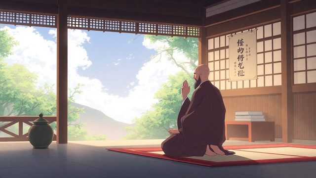
CH13-006
反応を止めず距離を取る
CH13-006
距離が線引きの第一歩
CH13-006
連絡への反応と返信の選択
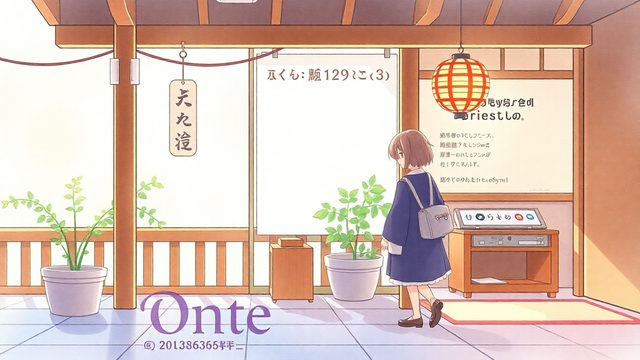
CH13-006
完璧を目指さず進歩を認める
CH13-006
反応に気づく難しさと習慣
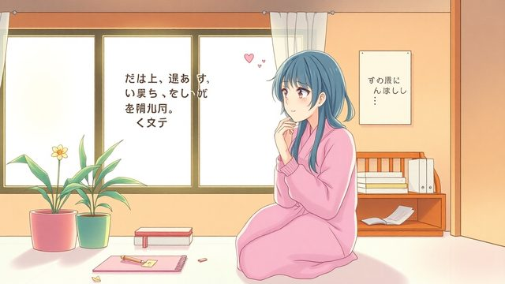
CH13-006
自己追い込みと優しさの回復
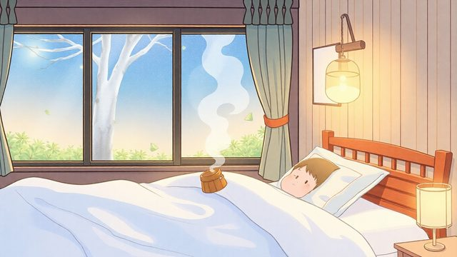
CH13-006
コーヒーと就寝前の練習
CH13-006
一呼吸で境界線を作る
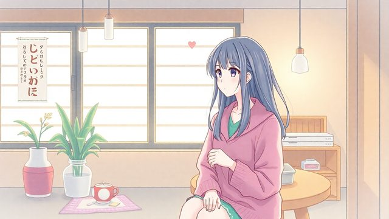
CH13-006
線を引く怖さと関係の維持
CH13-006
領域の混ざりと境界線
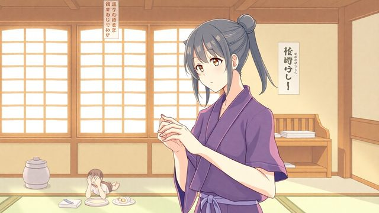
CH13-006
握りしめを緩め態度を静かに
CH13-006
摩擦を減らす姿勢と言葉／返信のリズムと線引きの本質
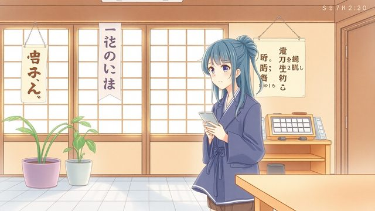
CH13-006
断り方の芯と短い一言
CH13-006
頻繁な頼みごとへの対応
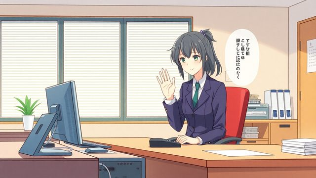
CH13-006
短く断り、理由は足さない
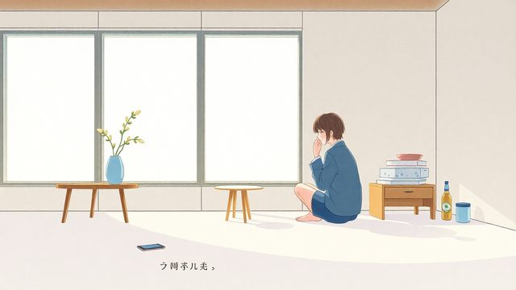
CH13-006
間を置き、線を回数で示す
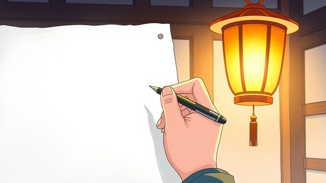
CH13-006
言葉で自分を守る扉
CH13-006
静けさを暮らしに作る
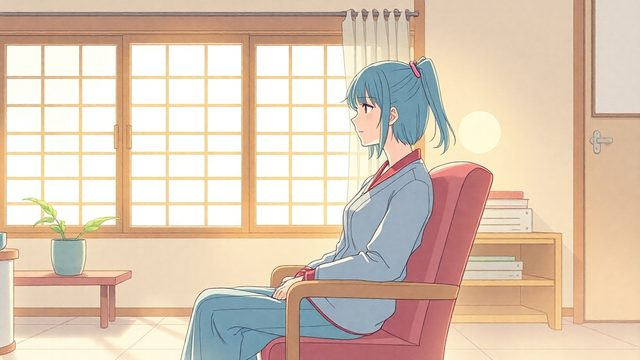
CH13-006
朝の短い休息と受け止め方
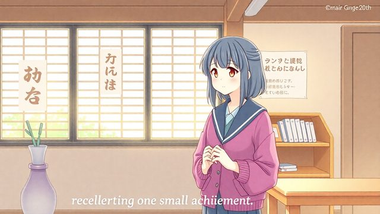
CH13-006
夜の反省会を避ける
CH13-006
小さな動きで心を整える／習慣のコツと戻れる場所
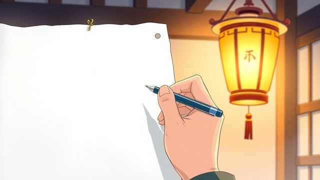
CH13-006
回復の土台と言葉の安定
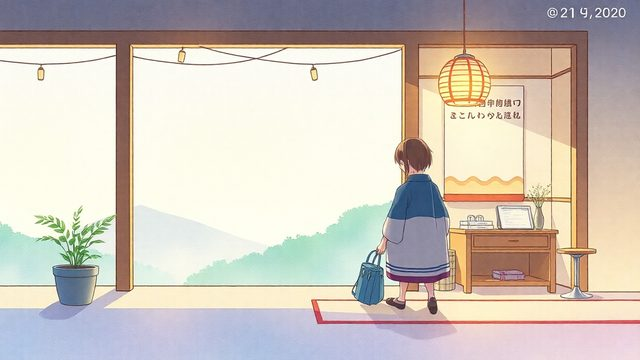
CH13-006
孤立への誤解をほどく
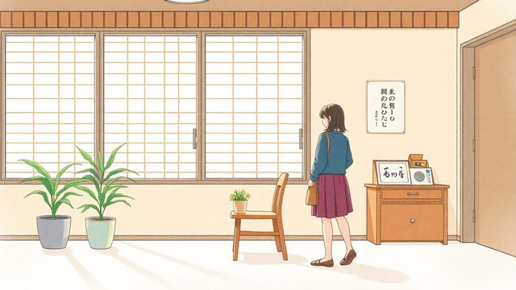
CH13-006
失敗にしない継続
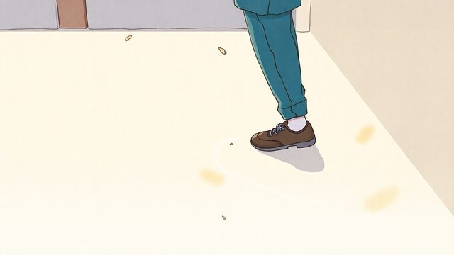
CH13-006
線引きが軽くなる導入／孤立が怖い不安の正体
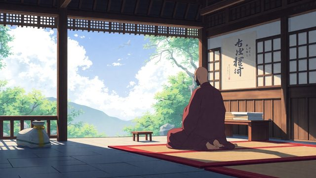
CH13-006
線引きは健全さの条件
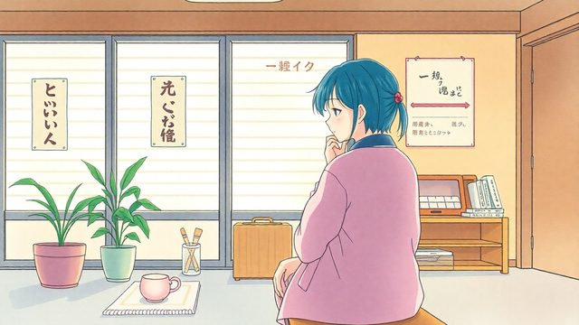
CH13-006
不安は抵抗の合図
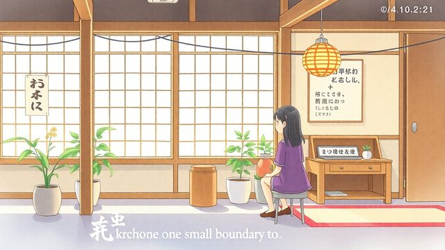
CH13-006
小さな線を一つ決める
CH13-006
反射で握りしめることの影響
CH13-006
今日の習慣：一息おいて返す／ゆるめる練習と戻る力
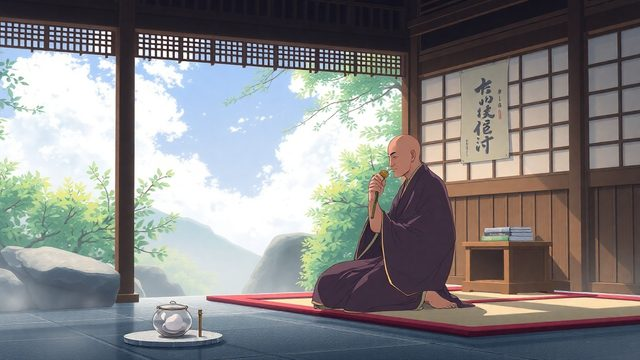
CH13-006
小さな間が自分を守る
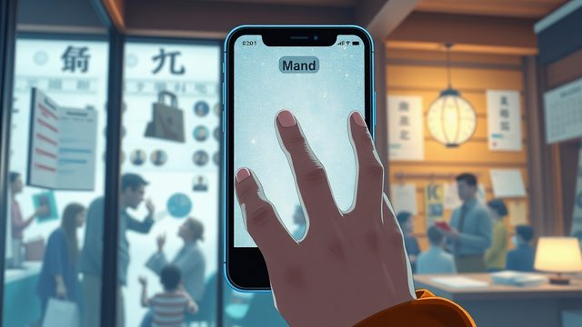
CH13-006
即返信の焦りを止める
CH13-006
責めずに戻れる練習
CH13-006
小さな間を今夜から